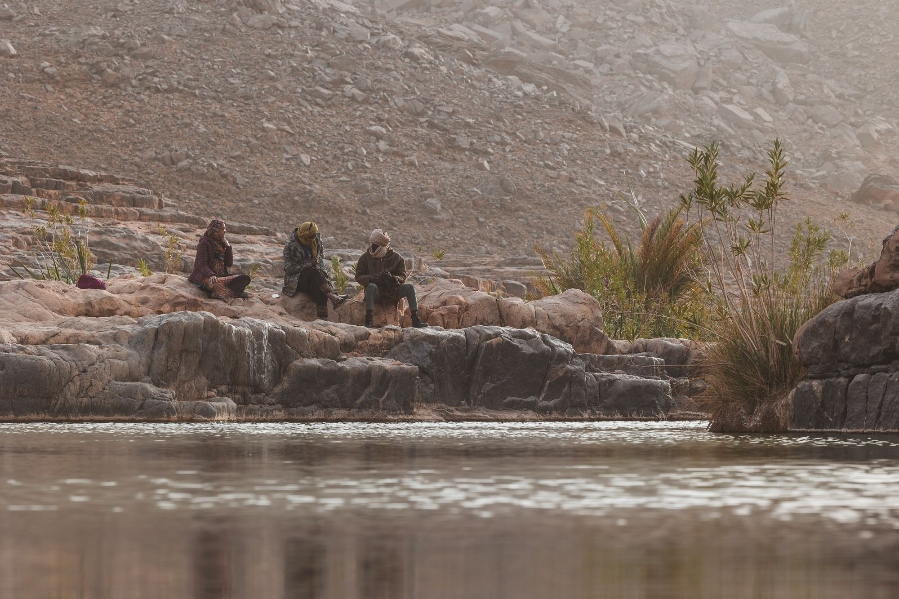
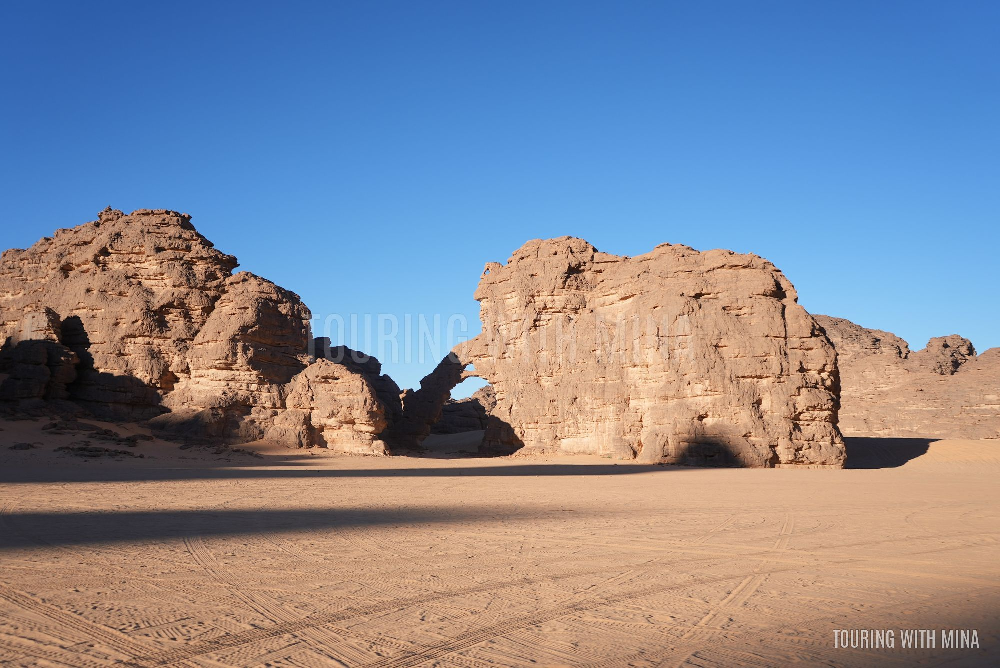

The places we take you to
The places on our tours around Djanet, from the oasis to the red dunes.


Gateway to the Tassili n'Ajjer
Djanet, the oasis
Djanet is an oasis at the foot of the Tassili plateau. Its palm grove follows the wadi, and its old stone quarters look over the valley from above.
Everything starts here: you land here, visit the market and meet the team before taking the track.


Ember-coloured dunes and sandstone arches
The Red Tadrart
South-east of Djanet, the Tadrart is a sandstone massif where the sand turns red and orange. The dunes lean against the cliffs.
You drive from canyon to canyon, walk barefoot in the sand and sleep at the foot of the dunes.


Water in the middle of the desert
Ihrir
Ihrir is a valley of the Tassili where water stays all year. Deep pools follow one another between cliffs, lined with palms and reeds.
The village lives from its gardens. You swim, walk along the water and share tea with the people who live there.


The hidden canyon
Essendilene
You enter on foot, between two walls that close in. Oleanders, acacias and pale sand follow the path to the pool at the end.
It is an easy, shaded walk that families enjoy as much as hikers.


The stone forest and the Weeping Cow
Tikoubaouine and Adayk
Near Djanet, erosion has carved the sandstone into striking shapes: arches, stone mushrooms and the famous Elephant rock.
Not far away, at Adayk, lies the famous Weeping Cow engraving, one of the best-known rock artworks of the region.
Your journey to Djanet starts with a message
Tell us your dates and wishes. Mina replies personally within 24 hours.